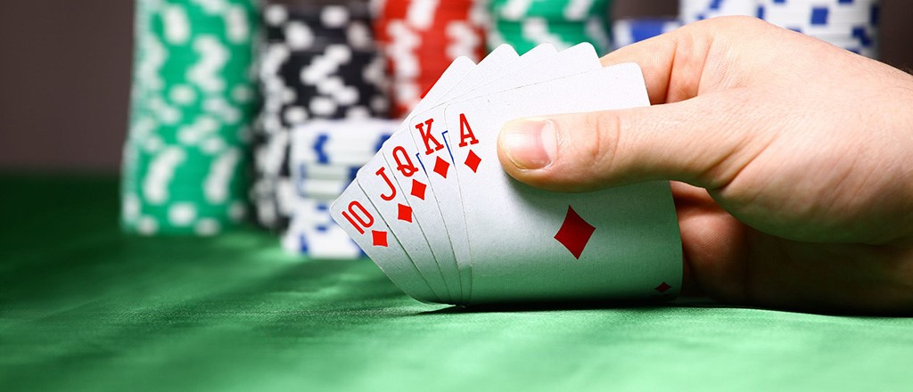
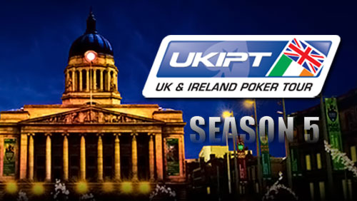

if everyone played the game the way they learnt it than we would be playing for days or weeks just to finish one tournament.
Everyone would basically play ony AA KK QQ JJ 1010 and maybe AK AQ AJ,the reality is that many players dont stick to those basic teachings and play their 2 cards as if they were AA.
thats why you see so many bad beats on both online and live events, I my self did the hardest thing from being a really tight player went to loose player and played any cards. just to get the feel for is and see if there is a way it can be balanced.
To my surprise its been a rewarding experiance. one thing I must say is that your gut feeling is the most important one. listen to it and you will never fail. long story short on a tournament same dealer kept giving me 56 Hearts few times, and after 4th time I made a comment to dealer - if you give me these 2 cards again I will call regardless of what. Ofcourse th very next hand i get 56 Hearts delt to me and I made a call to big blinds ( btw there were ony 14 players left and our table had 8 players inc me).as I made my call to my surprise 7 other players called.
The Flop was 556 and I was just gobsmacked but kept my calm and poker face, I Checked and hell broke loose. to my left player goes all in, next to him calls next to him does the worst thing he Re shows and the other 2call and last before me said well what the ..... im in, now I had to act but i forgot about that for a second and sid to the dealer ( what did I tell you on last hand: if you give me 56 hearts i will call. What do you thing has happened. Dealer said Your Action Sir (Angelo the dealer). So I collected my self and looked at flop just to be on safe side that it wasnt my Day dreams etc... and checked my 2 cards and made a call.
As all others were too happy to show their cards and think they won it. KK first to show than we have AK followed by QQ and JJ and AA And 1010 THEY all tought they had won or hoping to win but when they saw the AA most were sad angry or just waiting for me to show so we could hope for turn and river cards. the nightmare was I had 56 hearts. and as I turn them the whole casino goes dead silnce and than shouts and name callings etc.... turn card was no good but river card killed them all as I got another 5. that lead to me Knocking out 6 players from 14 witch resulted in us being on final table with 8 players left. as I won that monster hand I managed to collect over 2mil in chips and that made me the unreal chip leader, 20 mil chips vs 1.7mil table total.
Ive had that experiance my self. Winning with crap cards loosing with AA or KK vs 2 crap cards.so to become a great player I think you need experiance and patiance not to forget a lot of luck (if not no bad luck)Anyone with 2 cards can play the game and win, it all comes down to bet size position and big blinds.
I have been preparing for this a long long time. I have played normal tournaments at Grovsner BNR and been able to get to final table many times,also had my fair share of badbeats vs luckey hits. since Covid lockdown was lifted I have had to work even harder to gain more experianc and get noticed.
I have played several big Tournaments like:
UKIPT season2 (finished 86th out of 536 players).
UKIPT Season 5 ( finished 14th out of 380+ reentries)

last but not least Birmingham open where I finished 7th